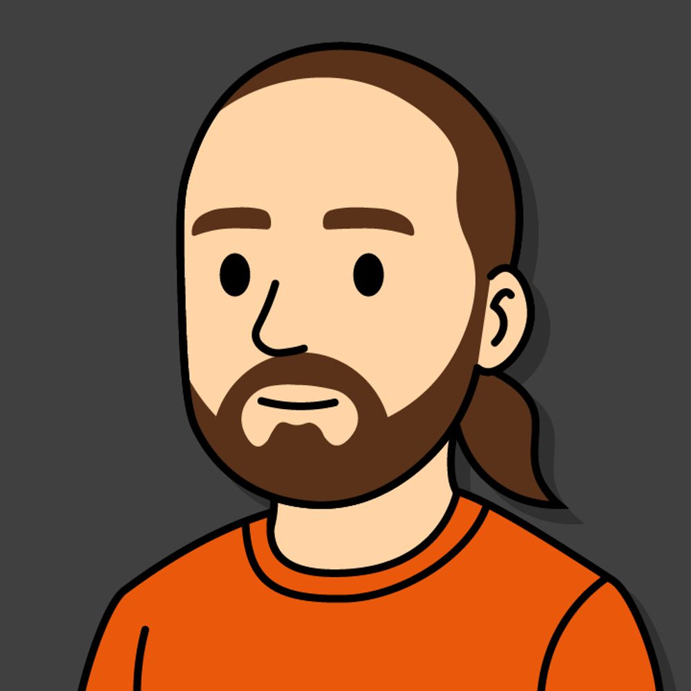
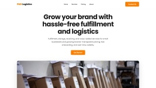

I like building fun and useful things with tech, whether that's automating tasks, creating 3D assets, or editing videos. I'm always exploring new ways to turn ideas into real projects people can use.

Creating detailed 3D models and designs using CAD software and Blender. I develop precise technical models and artistic 3D assets for various applications, from engineering designs to digital art.
Creating visually compelling designs that communicate ideas effectively. I develop brand identities, digital graphics, and visual content that combine creativity with strategic thinking to deliver impactful design solutions.
Building responsive websites and dynamic web applications from frontend to backend. I create full-stack solutions with clean code, excellent user experience, and robust functionality that work seamlessly across all devices.
A web tool for creating shareable links to specific clips from any YouTube video. Set a start and end time, copy the link, and share it — no account needed.
A scheduling tool for finding a time that works for everyone. Create an event, share the link, and let participants fill in their availability — no sign-up required.

I created this website for PMG Logistics, a third-party logistics company. The site is hosted on Amazon AWS S3 bucket, providing fast and reliable access to their services and information.
I created this music visualizer using Blender and Python, combining audio analysis with 3D animation. The project synchronizes bar visualizations with the music's beat, frequency, and rhythm.
Started working full time as a graphic designer and IT specialist. I help create marketing materials and mockups for co-branded products, and help with IT support for the company.
Graduated from high school with a focus on graphic design and programming. I learned the basics of C++, Unity, and Blender and started creating my own models and graphics.